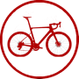
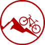
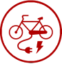
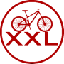
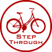
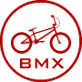

50mm Hitch
Slides into a 50mm square hitch receiver on your tow bar.
NeedsTow bar with a 50mm hitch receiver
Shop hitch bike racks ›Bike Rack Buying Guide
Choosing the right bike rack depends on three things: how many bikes you're carrying, what type of bikes they are, and how your vehicle can support the load. For most Australian vehicle owners, a tow hitch rack is the best long-term investment.
After fitting bike racks to over 200,000 vehicles, we know what actually works. Answer 3 quick questions for your match, or read on: the guide follows the same three steps.
Straight advice from people who fit them
Most fittings are done while you wait
Changed your mind? Swap it
For most vehicles, a tow hitch or tow ball rack: it carries up to 6 bikes, loads at waist height and takes eBikes. Roof racks carry up to 4 lighter bikes. Spare wheel, rear door, ute tub and suction racks suit particular vehicles.
| Rack style | Max bikes | eBikes | Carbon frames | Your vehicle needs | Best for |
|---|---|---|---|---|---|
| 50mm HitchOur pick | 6 | Yes | Yes, wheel-hold platform | Tow bar with a 50mm hitch receiver | eBikes, heavy bikes, families, regular trips |
| Tow BallOur pick | 6 | Yes | Yes, wheel-hold platform | Tow bar with a tow ball | eBikes, heavy bikes, families, regular trips |
| Roof Rack Mounted | 4 | No | Yes, wheel-hold carrier | Roof racks / bars | Lighter road and mountain bikes, sedans and smaller SUVs |
| Spare Wheel | 2 | Ask us | Ask us | A rear-mounted spare wheel | 4WDs and SUVs with an exterior spare |
| Rear Door / Boot | 3 | Ask us | Ask us | A suitable boot or hatch (check yours) | Hatches and wagons without a tow bar |
| Ute Tub | 5 | Ask us | Ask us | A ute or pickup tub | Getting several bikes on and off quickly |
| Suction | 3 | Ask us | Ask us | A bare, smooth surface | Sports cars and coupes that can't take roof racks |
Ask us means it depends on the exact rack. Call 1300 071 264 and we'll check it for your bikes.
Step 1 of 3 · Your bikes
First consider the amount of bikes you'd like to carry in total, but bear in mind that you can combine some rack styles, e.g. two bikes on the roof, and four on a tow hitch.
Different types of bikes are best suited to different bike racks, e.g. a heavy eBike or Fat Bike is more suited to a Tow Bar Rack than lifting it up to a Roof Rack Mounted bike rack. After fitting thousands of each type, here is what we recommend.

Nearly all our range of bike racks are suitable for Road Bikes (apart from Carbon Frame and eBikes).

Nearly all our range of bike racks are suitable for Mountain Bikes (apart from Carbon Frame and eBikes).

eBikes typically weigh 25 to 35kg, significantly heavier than a standard bike. Use Tow Hitch or Tow Bar racks only. Roof racks are not safe for eBike loading.
Carbon frames must be held by the wheels, never the downtube. Use wheel-hold racks to avoid cracking expensive frames.
Small kids' bikes are better suited to certain rack styles. Platform tow hitch racks work best for mixed adult and kids loads.

Fat Bikes and XXL bikes have wide tyres and can only fit certain specialist bike racks with wider trays.

Step Through Bikes and Ladies Bikes lack a traditional top tube. These work best with wheel-hold racks or a frame adapter.

Nearly all our range of bike racks are suitable for BMX Bikes (apart from Carbon Frame and eBikes).
Step 2 of 3 · Your vehicle
After fitting bike racks to over 200,000 vehicles across Australia, we find that Tow Hitch, Tow Ball or Roof Rack are usually the best option, but it all depends on your unique combination of vehicle + number and type of bikes, e.g. a mixture of eBikes, Kids' Bikes, Carbon Frame Bikes etc.
Slides into a 50mm square hitch receiver on your tow bar.
NeedsTow bar with a 50mm hitch receiver
Shop hitch bike racks ›Clamps onto the tow ball on your tow bar.
NeedsTow bar with a tow ball
Shop tow ball bike racks ›NeedsA set of roof racks
Roof platform? Fitting bikes to roof platforms is complex. Contact our Customer Service Team on 1300 071 264 or by email / chat. Want a specific product pick? See our bike carrier recommendations.
Shop roof bike racks ›NeedsA rear-mounted spare wheel
Shop spare wheel bike racks ›NeedsA suitable boot or hatch
Shop rear door bike racks ›NeedsA ute or pickup tub
Shop ute tub bike racks ›NeedsA bare, smooth surface
Shop suction bike racks ›Step 3 of 3 · Bike hold
Bike racks have different methods of attaching to the bike(s). Some bike types are more suited to certain attachment styles, e.g. carbon frames should be fitted to a Wheel Hold style rack.
Bike is held by the tyre, making it ideal for carbon frames.
Bikes sit on a solid platform and are secured by the wheels. Best for carbon frames.
Bikes sit on a solid platform and are secured by the frame.
Bike is held by the downtube, and both wheels remain on.
Bike's front tyre is removed, and it's held by the forks.
Bikes are held vertically by the forks.
Bikes are held horizontally by their frames.
Bikes are securely held onto the tailgate of a ute or pickup.
Five quick checks before you order: your combined weight limit, your tow bar's rating, whether you tow, how you'll lock it, and what you're paying for.
Your bike rack's own weight rating isn't the only number that matters. If you're mounting bikes on a roof rack, the bike rack, the roof rack/crossbar system underneath it, and every bike on top all count toward your vehicle's single rated roof load. Check that combined total, not just the bike rack's rating on its own.
Hitch and tow ball bike racks load onto your tow bar, not your bike rack alone. Every tow bar has its own rated ball weight or tongue load, listed on its compliance plate or in your vehicle handbook. A heavy platform rack loaded with e-bikes can get close to that limit faster than you'd expect. Always check the tow bar rating, not just the bike rack's capacity.
Most standard hitch-mounted bike racks can't be used at the same time as a trailer or caravan, since both need the tow hitch receiver. If you regularly tow, ask our team about trailer-hitch-compatible bike rack options before you buy.
Lock the rack itself to your vehicle if it's removable, and lock your bikes to the rack with a shrouded cable or chain rather than relying on straps alone. See our FAQ on bike security below.
Simple hanging racks for one or two bikes are the most affordable option. Price climbs with capacity, platform-style wheel-hold trays (needed for carbon and e-bikes), tilt-away boot access, and integrated locks: features worth paying for if you're carrying heavier or more expensive bikes regularly.
Your vehicle's rear number plate must stay clearly visible at all times. If your bike rack or loaded bikes cover it, you're required to fit an auxiliary plate.
A handwritten or photocopied plate isn't legal. Many hitch-mounted platform racks come with an integrated plate holder, which makes fitting an auxiliary plate straightforward.

We've fitted bike racks to over 200,000 vehicles across Australia. If a setup isn't right for your car, your bikes, or your budget, we'll tell you before you buy it, not after.
Find answers to the most common questions Australian vehicle owners ask before choosing and installing a bike rack.
Tow hitch racks are the better long-term investment for most Australian drivers. They're easier to load (everything happens at waist height), they handle heavier bikes and multiple bikes without strain, and they don't affect your vehicle's aerodynamics or fuel consumption as much as a roof-mounted load. Hitch racks also leave your boot accessible. Roof racks suit sedans and smaller SUVs where hitch installation isn't available, and they work well for lightweight road bikes on short trips. But if you're tall, have a high vehicle, or carry e-bikes, loading onto a roof becomes impractical. Choose roof if you need the freedom to access your boot frequently and only carry one lightweight bike. Choose tow hitch if you carry multiple bikes, have an e-bike, want easier loading, or plan regular trips. We've fitted over 200,000 racks across Australia, and hitch mounting is the option customers are happiest with long-term.
Always check both the total rack capacity and the per-bike capacity, and separately check your tow bar's own rated capacity if you're using a hitch or tow ball rack. The rack's rating and the tow bar's rating are two different numbers. A rack rated for 120kg total might only support 50kg per position: two 35kg e-bikes could exceed the per-bike limit even though the total seems acceptable. Standard bikes typically weigh 10–15kg, while electric bikes typically weigh 25–35kg. Add water bottles, tools, or accessories, and your real load climbs further. Our recommendation: choose a rack rated comfortably higher than your heaviest bike to account for road conditions and acceleration forces. For households with mixed bikes, a platform-style hitch rack offers greater flexibility. Exceeding weight limits voids warranties and risks damage to your bike, vehicle, and safety on the road.
Not all racks accommodate fat bikes. Standard racks are designed for narrower tyres; fat bike tyres are noticeably wider. Forcing a fat bike into a standard rack will damage the tyres or the rack itself. If you own a fat bike or wider-tyre e-bike, you need a rack specifically rated for fat tyres. Most quality hitch platform racks offer wide tyre baskets or adjustable trays that accommodate wider wheels. Check the rack specifications: it should clearly state compatibility with your tyre width and total wheelbase. Hitch-mounted platform racks are generally your best option for fat bikes because they provide stable support and enough clearance. If you have multiple bikes of different types, choose a platform rack with adjustable wheel holders so you can carry road bikes, mountain bikes, and fat bikes interchangeably.
Bike racks aren't universal. Hitch and tow ball racks need a tow bar rated for the load, roof-mounted racks need compatible roof bars fitted first, and some attachment styles only suit certain vehicle shapes (a rear door rack won't suit every hatch or wagon, for example). Confirm what your specific vehicle can take, including whether it has a tow bar or roof bars already fitted, before choosing a rack style.
It depends on your rack style and vehicle. Removable hitch racks can be taken off in seconds and stored in your boot, protecting your vehicle's appearance and reducing wind resistance. If you don't use the rack regularly, removal extends the lifespan of both rack and vehicle because you avoid corrosion, weathering, and minor movement stress. Roof-mounted racks and some permanent hitch setups are harder to remove, so most owners leave them installed. A loaded hitch rack affects fuel economy and handling, so removing it between trips saves money on fuel. Roof racks create wind noise and add weight. If you use a rack weekly or more, the convenience of leaving it on might outweigh the costs. For occasional users or those concerned about vehicle aesthetics, removable racks are worth the extra effort.
No, we don't recommend roof racks for electric bikes. E-bikes typically weigh 25–35kg, significantly heavier than a standard bike, and lifting that weight overhead is awkward and risky. The added height also stresses your roof bars, and the weight sitting up high can affect your vehicle's handling. Tow hitch or tow ball platform racks are the proper choice for e-bikes. Everything happens at waist height, you don't strain yourself loading, and these racks are engineered to handle the extra weight safely. Many e-bike owners we've fitted have also appreciated that platform racks make it easier to access their boot when bikes are loaded.
Yes, when they're correctly fitted, rated for your bikes, and kept within your vehicle's roof load limit. Roof racks aren't suitable for every bike, though: we don't recommend them for e-bikes or heavy cargo bikes, since lifting that weight overhead is awkward and puts extra stress on your roof bars. For standard road, mountain, kids' and BMX bikes within the rack's rated capacity, a correctly fitted roof rack is a safe and secure option.
Damage is rare when you choose the right rack for your situation and stay within weight limits. Hitch-mounted racks are generally low-risk because the load sits on the hitch receiver rather than your paint. Trunk racks can cause issues if straps are over-tightened on plastic panels, especially in hot weather when plastics become flexible. The most common damage we see comes from exceeding weight capacity, which causes the rack to sag or wobble, rubbing against your bumper or hatch. Roof racks can stress mounting points if overloaded. Our advice: select the right mounting style, never exceed capacity, remove the rack between trips, and apply corrosion inhibitor to the hitch receiver if using it regularly. With these precautions, your vehicle stays protected.
Carbon frames demand wheel-hold racks: never use frame-hold or frame-hanging styles. Carbon tubes crack under point-loading pressure, and once cracked, the frame is compromised. Wheel-hold racks, including platform racks, secure the bike by its wheels and rims instead. If your rack has any frame contact points, ensure they're padded with protective foam or rubber. Check that clamps aren't over-tightened; carbon rims can delaminate under excessive pressure. Platform-style hitch racks are ideal for carbon bikes because wheels sit in wide trays with minimal frame contact. Never transport carbon bikes on roof racks without wheel-hold carriers. Road debris can strike the frame during highway driving, and even stones from trucks can cause bullet-like damage to exposed carbon.
Bike theft from racks happens, but it's preventable. First, secure the rack itself to your vehicle with a hitch lock if it's removable. Hitch-mounted racks benefit from locking pins that bolt through the receiver. Second, lock your bikes to the rack using a heavy-duty cable or chain. Cable locks cut easily, so use thick, shrouded locks. Some platform racks include integrated cable locks; these work well for quick stops. Loop the cable through the frame and wheels, then secure it to a fixed point on the rack or use the safety chain loop on your hitch. Don't just trust straps alone; determined thieves can unbolt components. For high-risk areas or extended stops, use a U-lock in addition to the cable. Never leave bikes unattended on a rack for extended periods, and remove the rack between trips if possible.
Hitch-mounted racks extend out from your bumper, and platform racks generally sit lower than hanging racks. For roof-mounted racks, bikes sit above your roof line. Before purchasing, measure your vehicle's total height when bikes are loaded. This matters when entering parking garages: many owners have damaged racks or bikes trying to fit into tighter spaces than they anticipated. If you drive an SUV or 4WD, check your approach angle and the clearance to low branches on bush trails. Some newer hitch racks have tilting mechanisms that lower the entire rack to access your boot; this is worth considering if clearance is tight. Always be aware of your loaded height, especially in urban car parks and garages. When in doubt, get out and eyeball it before driving forward.
Start with a clean, dry rack and check that all clamps, straps, and fasteners are secure. Remove any accessories from your bikes (water bottles, lights, bells) that might fall during travel or rattle. Load heavier bikes first, positioning them to balance the load across the rack. For platform racks, align the wheels firmly in the trays and secure wheel straps snugly but not so tight they deform rims or tyres. For hanging racks, hang the bike by its top tube and secure the fork if required. Double-check that bikes don't touch each other or any part of your vehicle. If carrying mixed bike types, position lighter bikes on the outer positions and heavier bikes toward the centre. Make a final circuit: is the rack itself tight against the vehicle? Are straps not loose? Do wheels spin freely or are they held steady? Test the rack gently by hand before driving. After your first 10–15 minutes of driving, pull over and recheck everything, as components settle under road conditions. Regular maintenance keeps your setup safe and your bikes protected.
Yes, if your bike rack or loaded bikes obscure your vehicle's rear number plate, you must install an auxiliary number plate on the rack. Australian law requires your number plate to be clearly visible at all times. Each state manages this differently: NSW drivers order plates through myPlates, the NSW Government's authorised provider, while ACT residents go through Access Canberra. Costs vary by state, so check your own state's road transport authority for exact pricing. A handwritten or photocopied plate is illegal. Many hitch racks have integrated plate holders, making installation quick. If your setup also blocks brake lights, you'll need a light board as well. See our number plate section above for state-by-state links.
Yes, bike racks are legal in every Australian state and territory, provided your number plate and lights stay visible. If your rack or loaded bikes cover your rear number plate, you must fit an auxiliary plate through your state's authorised provider (NSW: myPlates, ACT: Access Canberra; see our number plate section above). If your brake lights or indicators are blocked, you'll also need a light board. Beyond that, make sure your loaded height and width don't exceed your state's general load limits, and that everything is secured so nothing can come loose on the road.
It depends on your insurer and policy, so we can't give a blanket answer. Some comprehensive car policies cover damage caused by a correctly fitted rack, while bike theft or damage to the bikes themselves is more often a matter for your home and contents or a specific bike insurance policy. Before you rely on either, call your insurer and ask specifically about bike racks and bikes carried externally, since cover varies a lot between providers.

Roof types, load ratings, and bars vs platforms: find the right roof rack for your vehicle.
Read the guide ›
Shapes, sizes and what fits your roof bars, to pick the right roof box for your trips.
Read the guide ›
Not sure what awning or roof top tent to choose? Watch our deep dive videos.
Read the guide ›